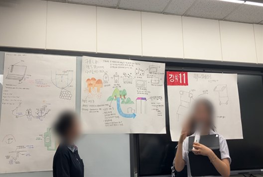
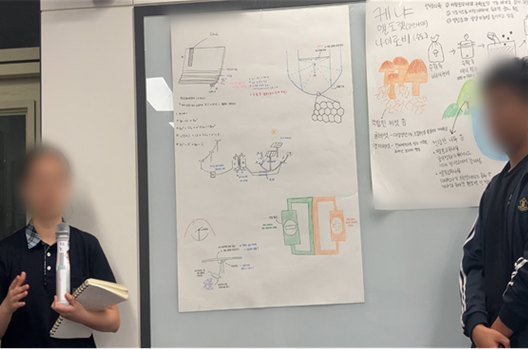
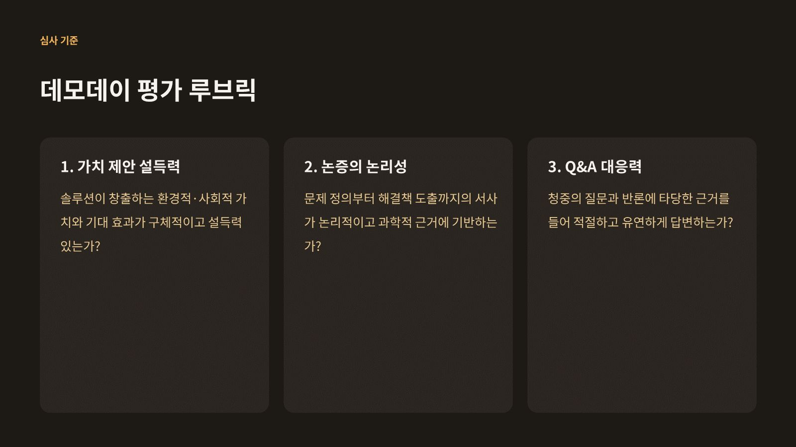
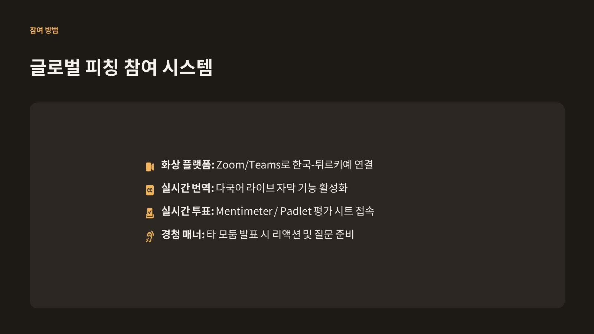
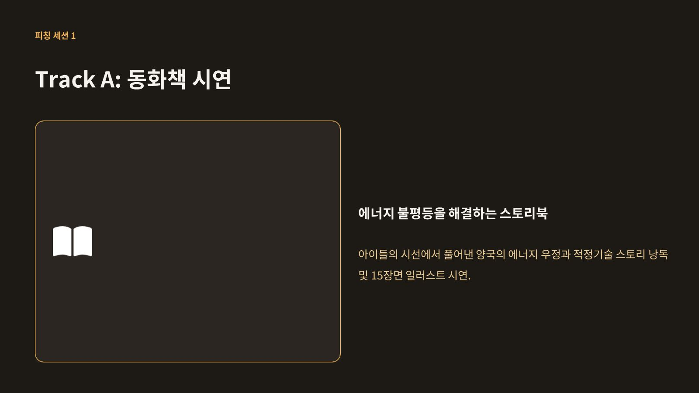
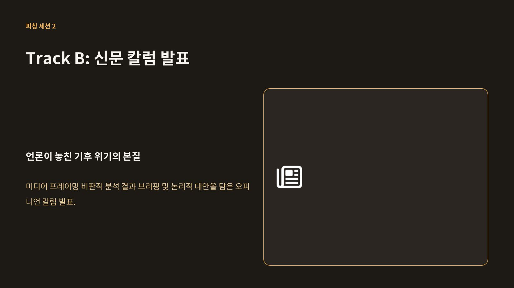
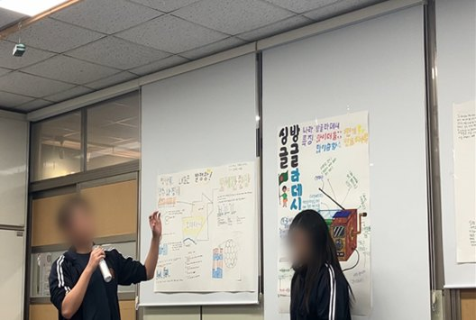

한-튀르키예
글로벌 데모데이
오늘의 목표심사 기준을 확인하고, 팀당 3분 피칭과 2분 Q&A로 우리 아이디어의 가치를 세상에 제안해요.

수업 흐름
← → 키나 아래 버튼으로 넘겨요. 교사 모드를 켜면 발문·유의점이 보여요.
한-튀르키예 그린 벤처
글로벌 데모데이
데모데이는 우리가 만든 아이디어의 기능과 환경적·사회적 가치를 세상에 제안하는 자리예요.

심사 기준 · 데모데이 평가 루브릭
1. 가치 제안 설득력
솔루션이 만드는 환경적·사회적 가치와 예상 효과가 구체적인가? 예상치(추정)와 실제로 측정할 값을 구분했는가?
2. 논증의 논리성
문제 정의부터 해결책까지의 서사가 논리적이고 과학적 근거에 기반하는가?
3. Q&A 대응력
청중의 질문과 반론에 타당한 근거로 유연하게 답하는가?

피칭 방법 · 참여 시스템
- 화상 플랫폼: Zoom/Teams로 한국–튀르키예 연결
- 시간 맞추기: 한국 15:00 = 튀르키예 09:00 (한국 오전 9시는 튀르키예 새벽 3시!)
- 실시간 번역: 다국어 라이브 자막 기능 활성화
- 실시간 투표: Mentimeter / Padlet 평가 시트 접속
- 경청 매너: 다른 모둠 발표 때 리액션과 질문 준비

세션 1 · Track A 동화책 시연
에너지 불평등을 해결하는 스토리북
아이들의 시선에서 풀어낸 양국의 에너지 우정과 적정기술 이야기를 낭독하고, 15장면 일러스트를 시연해요.

세션 2·3 · Track B 칼럼 & 포스터
언론이 놓친 기후 위기의 본질
미디어 프레이밍 비판적 분석 결과를 브리핑하고, 논리적 대안을 담은 오피니언 칼럼을 발표해요.
직관적인 기후 행동 메시지
Canva로 디자인한 슬로건과 일상 속 3대 실천 수칙을 시각화해 브리핑해요.

5차시 끝!
동료 평가 시트를 저장하고, 다음 시간 발표 팀은 화면 공유를 미리 확인해요.
6차시 수업 화면으로 →
활동지
동료 평가 시트
쓴 내용은 이 기기의 브라우저에만 저장돼요. 수업이 끝나면 아래 「내 기록 모두 복사」로 모둠 문서에 붙여 두세요.
1. 가치 제안 설득력
환경적·사회적 가치와 예상 효과가 구체적인가? 예상치(계산식·출처)와 실제로 측정할 값을 구분했는가?
2. 논증의 논리성
문제 정의부터 해결책까지 논리적이고 과학적 근거에 기반하는가?
3. Q&A 대응력
질문과 반론에 타당한 근거로 유연하게 답하는가?
별점 평가판과 3분+2분 원형 피칭 타이머는 프로그램 페이지 「데모데이」에 있어요. 공식 투표는 Mentimeter·Padlet에서 해요.
1평가 1
2평가 2
3평가 3
4평가 4
이 차시 슬라이드
5차시 슬라이드 · 31~37장
이 차시 평가
피칭과 동료 피드백
[10공국2-03-02] · 피칭(발표) 평가, 동료 피드백(Padlet)
| 기준 | A | B | C |
|---|---|---|---|
| 산출물 및 피칭 10공국2-03-02 | 3분 안에 문제–해결–예상 효과(계산 근거 포함)를 순서대로 말하고, 예상치와 실제로 측정할 값을 구분한다. Q&A 질문에 데이터나 원리를 들어 답한다. | 피칭은 시간 안에 했지만 예상 효과에 근거(수치·계산)가 없거나, Q&A에서 근거 없이 답한다. | 3분 안에 문제–해결을 다 말하지 못했거나, Q&A에 답하지 못했다. |
| 동료 피드백의 질 10공국2-03-02 | 다른 팀 발표의 근거·데이터를 짚어 개선 질문을 2팀 이상에 남긴다(예: “배출계수 출처는?”). | 인상 평(“좋았다”, “재밌다”)만 남긴다. | 피드백을 남기지 못했다. |
참여 여부(투표·평가 시트 제출)는 성취 수준이 아니라 체크리스트로 따로 기록해요.
나가기 질문
오늘 들은 발표 가운데 근거·데이터를 짚어 남긴 질문 하나를 적어요. (예: “배출계수 출처는?”)